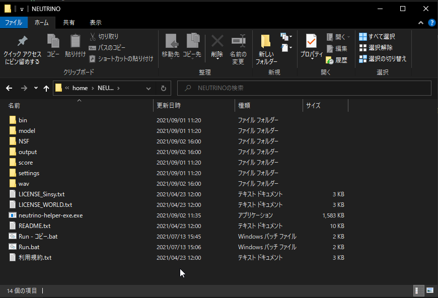
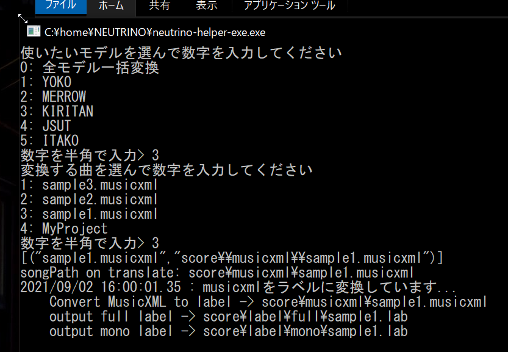
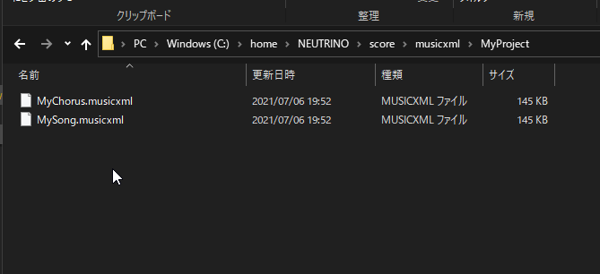

NEUTRINO HELPER TOOL
AIきりたんで有名なNEUTRINOはニューラルネットワークを使用した歌声シンセサイザーでとても自然な歌声を合成してくれます。 けど若干つかいにくいですよね？
このツールはNEUTRINOでの歌声の合成をちょこっとだけ楽にしてくれます。
使い方
- neutrino-helper-exeをNEUTRINOのフォルダに入れて実行
- 使いたいモデルと変換したい楽曲を数字で選択
- これだけ！
もっと便利な使い方
全モデル一括変換
聴き比べしたいときのために、モデル変換で0番を選ぶと全モデル一括変換ができます。
複数パート一括変換
一つの曲にメインメロディとハモリがある場合などに使います。 score（名前は何でも平気）その中にmusicxmlファイルを入れます。 変換するときに、MyProjectを選ぶとそのフォルダの中に入っているファイルは一括で変換します。 全モデル一括変換も同時に使えるので、複数パートを複数人で歌うみたいなやつが一回で変換できます。 なんとなくの使い方はスクショで察してください。
下記のリンクから最新版をダウンロードして使ってください
  